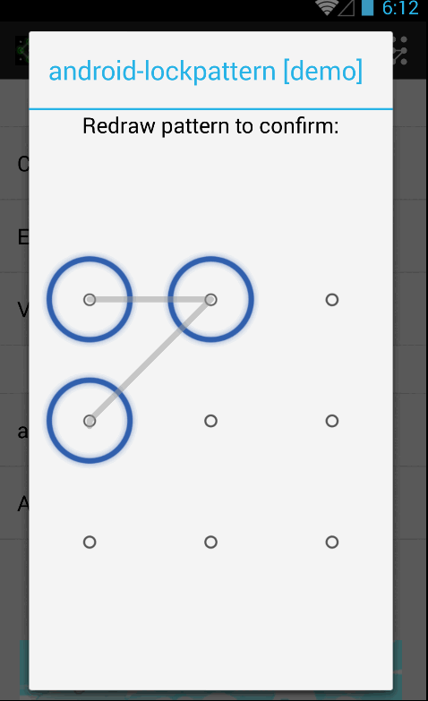
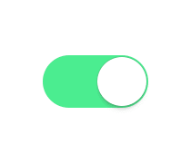

1.Side-Menu.Android
カテゴリ別スライドメニュー、Yalantis制作。
プロジェクトアドレス：https://github.com/Yalantis/Side-Menu.Android

2.Context-Menu.Android
美しいアニメーション効果付きのコンテキストメニューを簡単かつ迅速に統合できます。Yalantis制作。
プロジェクトアドレス：https://github.com/Yalantis/Context-Menu.Android

3.Pull-to-Refresh.Rentals-Android
シンプルでカスタマイズ可能なプルリフレッシュ実装を提供します。Yalantis制作。
プロジェクトアドレス：https://github.com/Yalantis/Pull-to-Refresh.Rentals-Android

4.Titanic
水位の上昇・下降を表示できるTextView。
プロジェクトアドレス：https://github.com/RomainPiel/Titanic

5.AndroidSwipeLayout
スライドするLayout。単一のView、ListView、GridViewをサポート。
プロジェクトアドレス：https://github.com/daimajia/AndroidSwipeLayout
デモアドレス：Download Demo

6.Android Typeface Helper
カスタムフォントを簡単に実装できるライブラリ。
プロジェクトアドレス：https://github.com/norbsoft/android-typeface-helper

7.android-lockpattern
Androidのパターンロック解除。
プロジェクトアドレス：https://code.google.com/p/android-lockpattern/
デモアドレス：https://play.google.com/store/apps/details?id=group.pals.android.lib.ui.lockpattern.demo
ドキュメント紹介：https://code.google.com/p/android-lockpattern/wiki/QuickUse
APP例：Android起動時のパターンロック解除、支付宝（Alipay）のパスワードロック解除。

8.ToggleButton
状態を切り替えるButton。iOSに似ており、Viewで実装。
プロジェクトアドレス：https://github.com/zcweng/ToggleButton

9.WilliamChart
チャートを描画するライブラリ。LineChartView、BarChartView、StackBarChartViewの3種類のチャートタイプをサポートし、Android 2.2以上のシステムをサポートします。
プロジェクトアドレス：https://github.com/diogobernardino/WilliamChart
デモアドレス：https://play.google.com/store/apps/details?id=com.db.williamchartdemo
デモプロジェクト：https://github.com/diogobernardino/WilliamChart/tree/master/sample

10.スライドするViewPagerのグラデーション背景色を実装する
プロジェクトアドレス：https://github.com/TaurusXi/GuideBackgroundColorAnimation

11.Euclid
ユーザープロフィール画面、Yalantis制作。
プロジェクトアドレス：https://github.com/Yalantis/Euclid

12.InstaMaterial
InstagramのMaterialスタイルのコンセプトデザインセット。
プロジェクトアドレス：https://github.com/frogermcs/InstaMaterial

13.SpringIndicator
bezierを使用して粘着効果を実現するページインジケーター。
プロジェクトアドレス：https://github.com/chenupt/SpringIndicator

14.BezierDemo
QQのメッセージバブルをドラッグして消える効果を模倣。
プロジェクトアドレス：https://github.com/chenupt/BezierDemo

15.FoldableLayout
折りたたまれた便箋が開かれるようなアニメーション効果。
プロジェクトアドレス：https://github.com/alexvasilkov/FoldableLayout

16.Taurus
プルリフレッシュ、Yalantis制作。（なんだか見覚えがありませんか？）
プロジェクトアドレス：https://github.com/Yalantis/Taurus

17.PersistentSearch
検索をクリックすると、コントロールが元の位置に入力ボックスを表示します。
プロジェクトアドレス：https://github.com/Quinny898/PersistentSearch

18.circular-progress-button
進捗表示付きButton。
プロジェクトアドレス：https://github.com/dmytrodanylyk/circular-progress-button

19.discrollview
上下にスクロールすると子要素が異なるアニメーション効果を示すscrollView。Webページでは「視差スクロール（パララックススクロール）」と呼ばれます。
プロジェクトアドレス：https://github.com/flavienlaurent/discrollview

20.sweet-alert-dialog
アニメーション効果付きのカスタムダイアログスタイル。
プロジェクトアドレス：https://github.com/pedant/sweet-alert-dialog

21.android-floating-action-button
Material Designスタイルのフローティングアクションボタン。
プロジェクトアドレス：https://github.com/futuresimple/android-floating-action-button

22.android-collapse-calendar-view
月表示と週表示を切り替えられるカレンダーコントロール。
プロジェクトアドレス：https://github.com/blazsolar/android-collapse-calendar-view

23.NumberProgressBar
シンプルでセクシーな数字付きプログレスバー。
プロジェクトアドレス：https://github.com/daimajia/NumberProgressBar

24.CircularProgressView
CircularProgressView は、カスタムviewの方法で実装されたMaterialスタイルのローディングインジケーターコントロールで、あらゆるバージョンに対応しています。
プロジェクトアドレス：https://github.com/rahatarmanahmed/CircularProgressView

25.OriSim3D-Android
openglはさまざまな折り紙効果を実装し、一枚の紙が船に折りたたまれていく全過程をシミュレーションしています。
プロジェクトアドレス：https://github.com/RemiKoutcherawy/OriSim3D-Android

出典：http://www.androidchina.net/1992.html